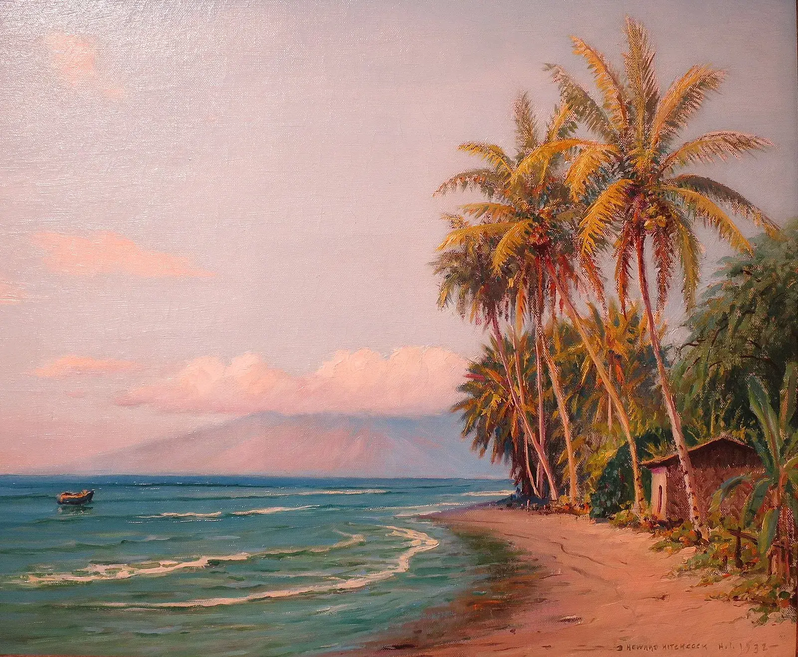
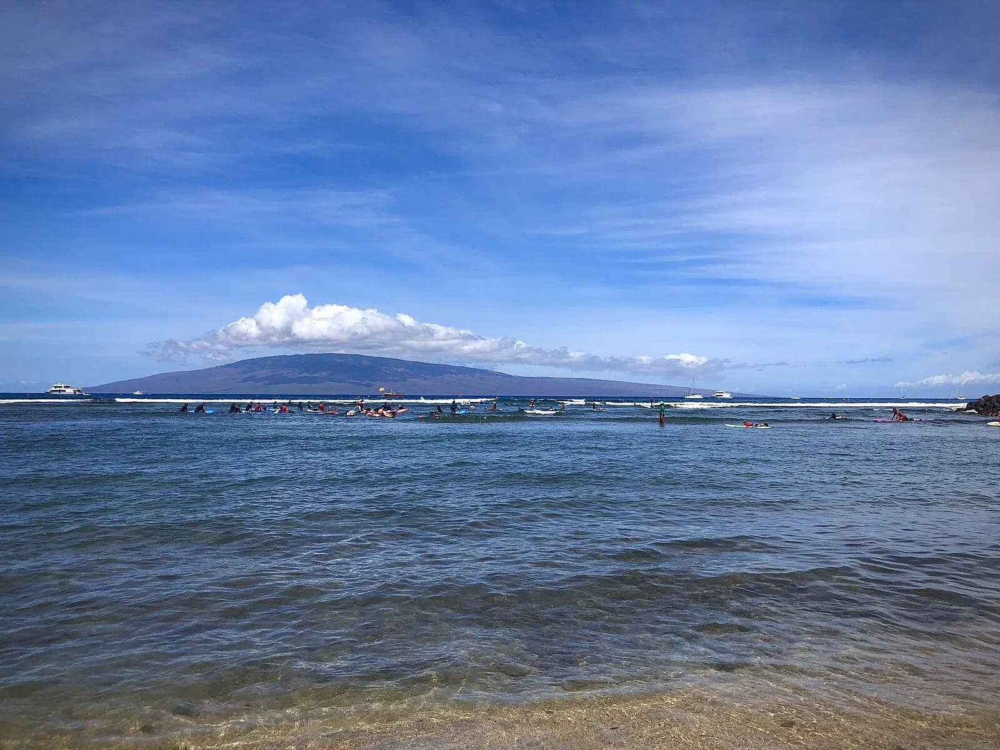
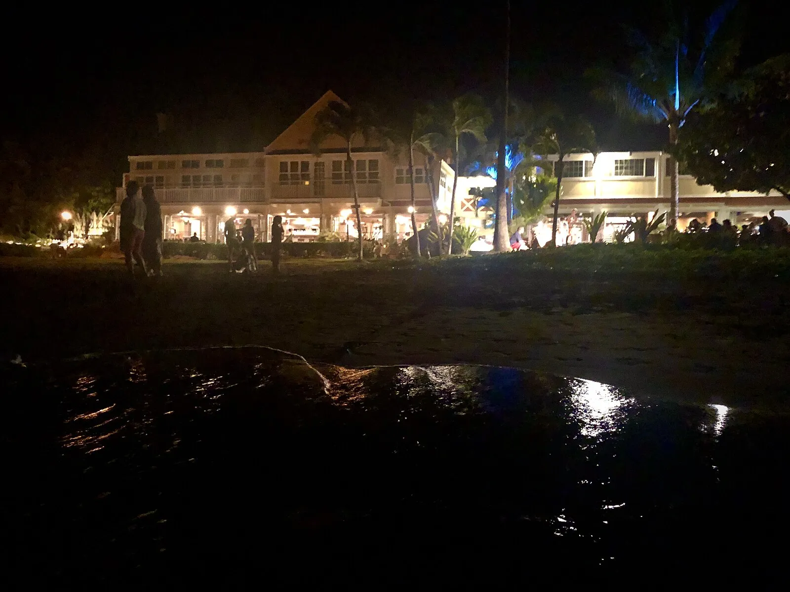
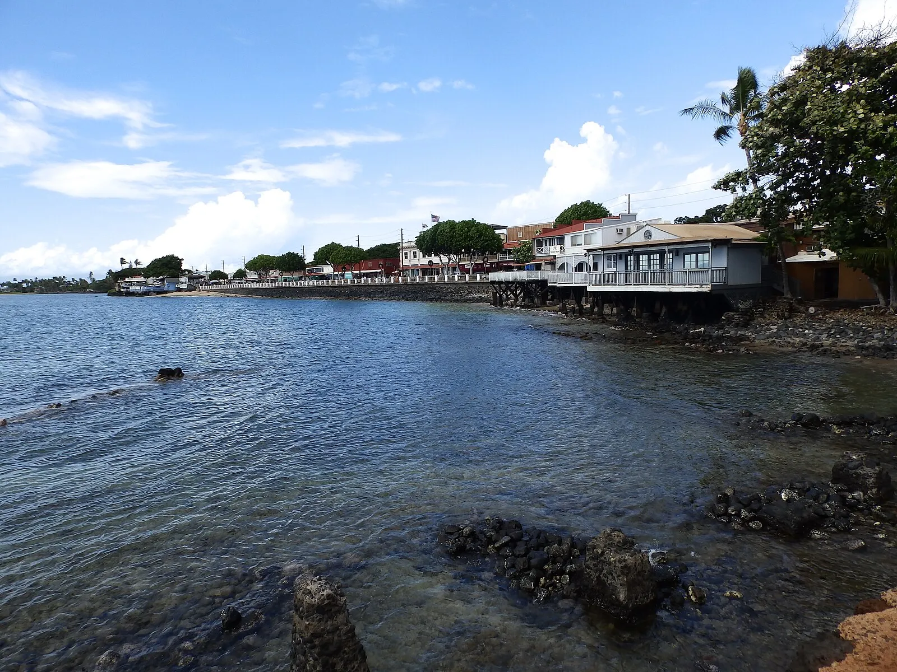
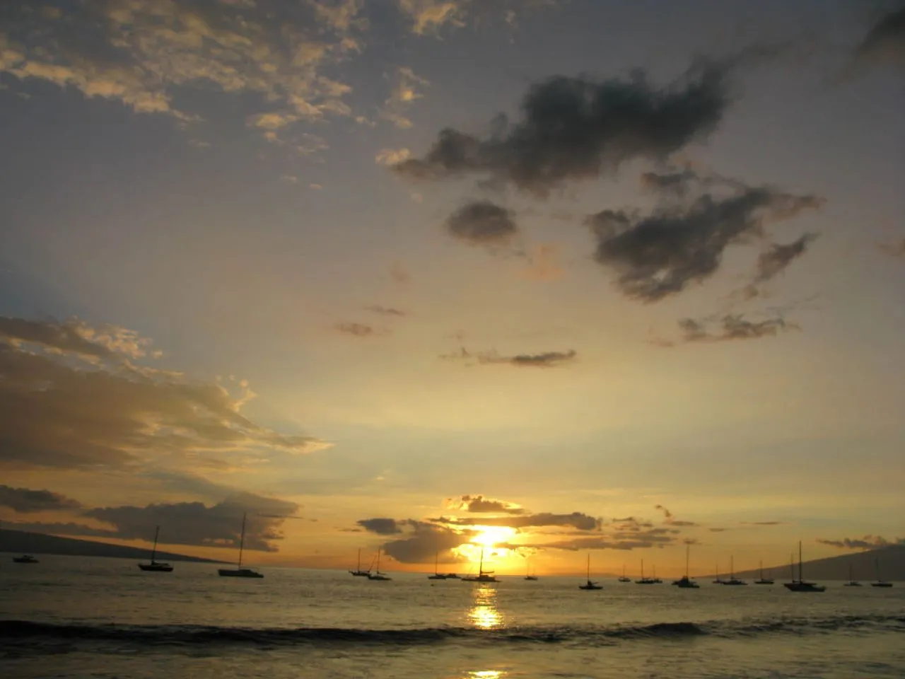
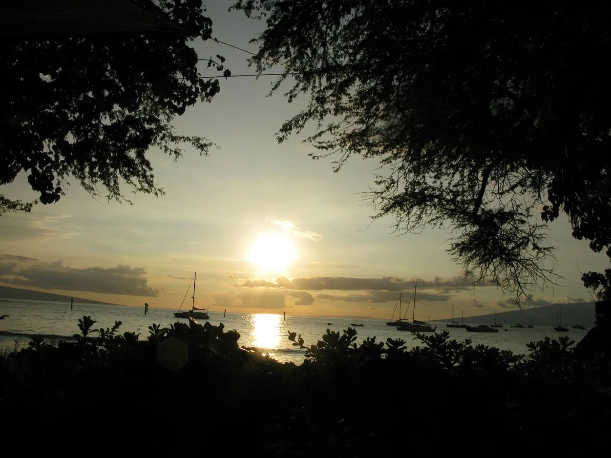
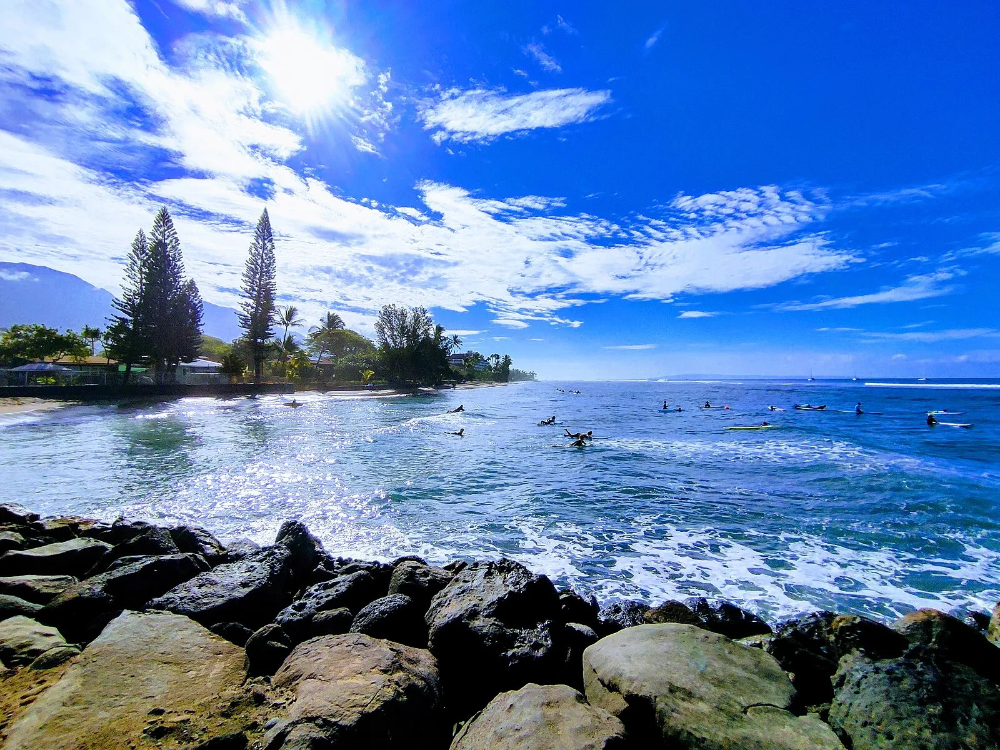
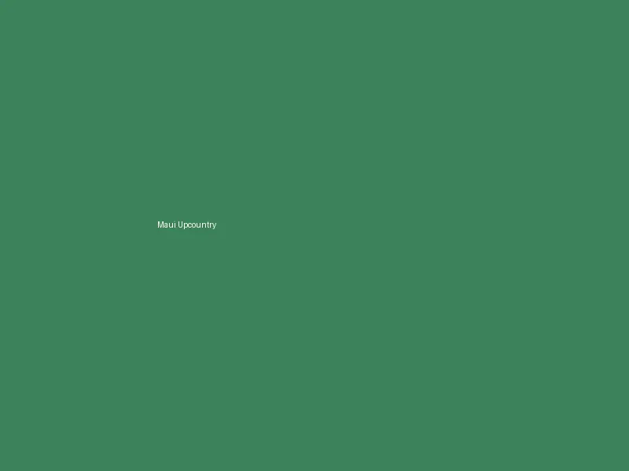
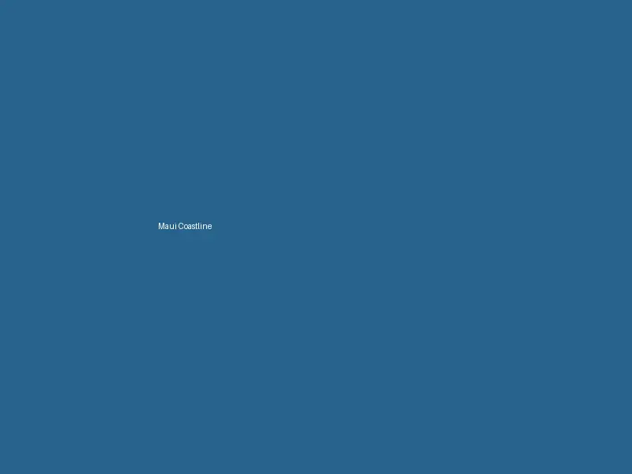
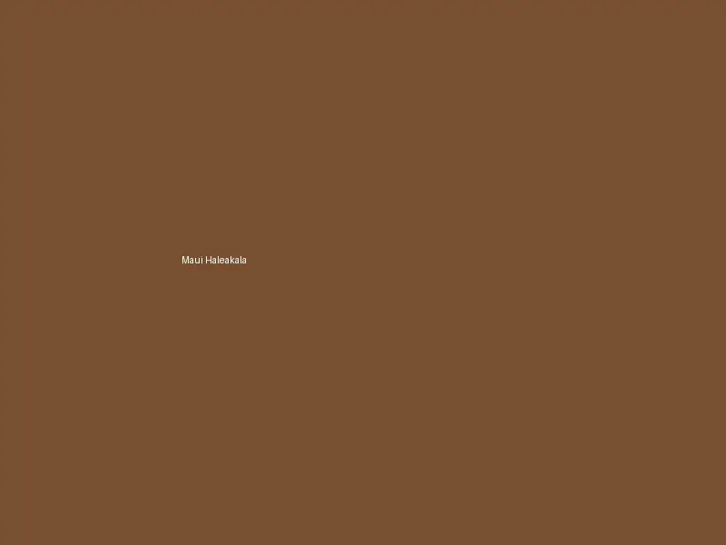

My Visit to Maui
I woke before dawn in my stateroom, feeling the ship slow as we approached Kahului Harbor. Through the balcony door I could smell the warm salt air mixed with something floral — plumeria, I realized later — carried on the trade winds across Maui's central isthmus. The sky above Haleakala was still dark, but a thin ribbon of gold was already forming along the crater's silhouette. My hands gripped the railing as I watched the harbor lights grow closer, and I felt the cool metal beneath my fingers. This was our first Hawaiian port, and I had been planning this day for months.

We disembarked early and I picked up our rental car right at the port — $65 for the day from a local agency, which felt like a fair price for the freedom it would give us. The drive from Kahului to Iao Valley took only about twenty minutes, but the landscape shifted so dramatically that it felt like crossing into another world entirely. We passed through the quiet streets of Wailuku, where old storefronts with faded paint sat beside newer cafes, and then the road narrowed as we entered the valley. The air grew cooler and heavier with moisture. I rolled down my window and heard the rush of Iao Stream before I saw it — a sound that seemed to come from the green walls themselves.
At Iao Valley State Park, I stood beneath the Needle and felt genuinely small. The volcanic spire rises 1,200 feet from the valley floor, draped in moss and ferns so thick that the rock beneath is barely visible. Mist drifted through the canopy above us, and my clothes were damp within minutes, though I hardly noticed. This was the site where Kamehameha I fought the Battle of Kepaniwai in 1790 — a conflict so fierce that the stream ran red and the name itself means "the damming of the waters." Standing there in the quiet, with only the sound of water and birdsong, it was difficult to imagine violence in a place so peaceful. But that contrast — between the beauty of the land and the weight of its history — is something I carried with me the rest of the day.

From the valley, we drove Upcountry through Makawao — a former paniolo cowboy town that now mixes ranch heritage with art galleries and surf shops. I stopped at Komoda Store and Bakery for their famous cream puffs, which cost $2 each and tasted of vanilla and butter and something I can only describe as old-fashioned care. The road climbed higher into Kula, where lavender fields sprawl across slopes at 3,000 feet elevation. I watched a woman at the Ali'i Kula Lavender Farm carefully pruning her rows while explaining the different varieties to a small group of visitors. The scent of lavender was everywhere, mixing with the eucalyptus from the trees that lined the gravel paths. My wife bought a small sachet of dried lavender for $8, and it still sat on our nightstand months later, a quiet reminder of that hillside.
We did not attempt the full Road to Hana — I knew from my research that the complete 64-mile route with its 620 curves and 59 one-lane bridges demands ten to twelve hours, which our port day simply could not accommodate. However, we drove the first twenty miles to Twin Falls, and even that partial journey was worth every minute. The road hugs the coastline, threading through thick rainforest where waterfalls appear without warning through gaps in the foliage. I pulled over at a lookout near Keanae Peninsula, where a lava-rock shoreline met the churning ocean, and I could taste salt spray on my lips from thirty feet above the water.
Lunch was at Mama's Fish House on the north shore — $45 for opah with lilikoi butter that tasted like sunshine and sea combined. The restaurant sits right on the sand, and through the open windows I watched waves curl and collapse while we ate. It was expensive, yes, but my wife squeezed my hand across the table and said it was the best meal of our entire cruise. I agreed without hesitation.

On our way back toward the ship, I made a quiet detour toward Lahaina. The August 2023 wildfire had devastated this town that was once the whaling capital of the Pacific — over 400 ships a year called here in the 1850s — and briefly the capital of the Hawaiian Kingdom. I did not drive through the burn zone; it felt wrong to treat grief as scenery. But I stopped at the edge of the recovery area, where a simple memorial had been placed with flowers and photographs. A man standing nearby noticed me reading the names and quietly said, "We are healing." I nodded, and for a moment I couldn't speak. Something shifted in me then — I finally understood that travel is not only about the beautiful moments we collect, but about the quiet grace of witnessing a community's courage as it rebuilds.
The great Banyan Tree, planted in 1873 and once the largest in the United States spreading across nearly an acre, was damaged but survived the fire. It is already sending out new green shoots. That image — new growth from scorched wood — stayed with me longer than any waterfall or sunset view. Despite the devastation, hope endures here.
We returned to the ship with an hour to spare, sandy and sunburned and quietly grateful. I realized that Maui had given us something I had not expected. I had planned for scenery and adventure, but what I received was something closer to perspective. The island showed me both its staggering beauty and its deepest wounds, and asked me to hold both at once. Although I have visited many ports across many itineraries, this one taught me that the places that move us most are not always the prettiest — sometimes they are the most honest.
Looking back, I learned that Maui is not a single experience but a collection of contrasts — volcanic summit and valley floor, pristine coastline and recovering town, ancient battle site and quiet prayer. What matters is not how many stops you make, but whether you pause long enough to let the island speak. I am grateful we did.
The Cruise Port
Cruise ships dock at Kahului Harbor, located on Maui's north-central coast within an active commercial port zone. The terminal facilities are basic — expect a simple covered area with restrooms and a small information desk rather than a polished cruise terminal. The pier itself can accommodate two large cruise ships simultaneously, though during peak season only one berth is typically available for passenger vessels. There is no shuttle service from the pier to town; taxis, rideshares, and rental cars are the primary options. The nearest shops and restaurants in Kahului town center are approximately one mile from the dock, which is a manageable walk for those with moderate mobility but can feel long in the tropical heat. Wheelchair accessible pathways connect the pier to the main road, though surfaces can be uneven in places near the industrial sections of the harbor.
Getting Around Maui
A rental car is essential for exploring Maui properly. Several agencies operate directly at or near Kahului Harbor, with day rates starting around $50-$80 depending on season and vehicle type. Book ahead during peak season as availability drops quickly when multiple ships are in port. Enterprise, Budget, and Avis all have locations within a short shuttle ride of the pier.
The Queen Ka'ahumanu Center shopping mall is approximately one mile from the cruise terminal and serves as the central transit hub for the Maui Bus system. Public buses operate hourly, charging $2 per ride or $4 for an unlimited day pass. Route 20 connects to Lahaina on the west side, while Route 10 serves Kihei and the south shore. However, bus schedules are limited and routes do not reach key attractions like Haleakala or the Road to Hana, making them impractical for most cruise visitors seeking to maximize their port day.
Taxis and rideshare services like Uber and Lyft operate on Maui, though wait times can be longer than on the mainland. A taxi from Kahului to Ka'anapali Beach runs approximately $60-$80 one way. For those with mobility concerns, accessible taxi services should be arranged in advance through the ship's excursion desk or by contacting local providers directly before arrival.
Maui Area Map
Interactive map showing Kahului Harbor, Haleakala, beaches, and key attractions.
Beaches
Maui is blessed with diverse beaches across its coastline. Kanaha Beach Park, just minutes from the port, is a favorite among windsurfers and offers calm swimming areas. Ka'anapali Beach on the west side features a three-mile stretch of golden sand with excellent snorkeling near Black Rock. Wailea Beach on the south side provides a more upscale atmosphere with resort access. For adventurous visitors, the black sand beach at Wai'anapanapa State Park along the Road to Hana offers a dramatic volcanic landscape.

Excursions and Activities
Iao Valley State Park: Features "The Needle," a dramatic volcanic rock spire rising 1,200 feet straight from the valley floor through lush jungle. Entry fee is $5 per person plus $10 parking. This is a sacred battleground from 1790 and one of Maui's most photographed landmarks. The paved walkways are wheelchair accessible to the main viewpoint, making this one of the most inclusive natural attractions on the island. Allow 1-2 hours including the drive from port.
Haleakala National Park: The "House of the Sun" volcanic crater rises to 10,023 feet, accessible via a scenic 38-mile drive from Kahului. Park entry costs $30 per vehicle. Sunrise viewing is legendary but requires advance reservations through recreation.gov at $1 per reservation. The summit landscape feels otherworldly with rust-red cinder cones and rare silversword plants. A ship excursion for Haleakala sunrise typically costs $120-$180 per person and includes transport, blankets, and hot coffee — the guaranteed return to the ship makes this worth considering since the drive involves steep, winding roads in darkness. Independent visitors should book ahead and plan for a 3am departure.

Road to Hana: The famous 64-mile coastal highway with 620 curves and 59 one-lane bridges winding through rainforest waterfalls, bamboo groves, and black sand beaches. Allow a full day for the complete route or tackle the first section to Twin Falls or Keanae Peninsula for a 3-4 hour taste of the experience. A ship excursion for a partial Hana tour runs $100-$150 per person. Independent travelers can rent a car and go at their own pace, but be honest with yourself about timing — missing the ship because you went too far down the Hana Highway is a real risk without a guaranteed return time.
Upcountry Maui: Makawao's paniolo cowboy town, Kula lavender farms at $3 entry, and protea fields at 3,000+ feet elevation with cooler air and sweeping views of the central valley. This area is best explored by car and makes an excellent half-day paired with Iao Valley.
Lahaina Town: Historic whaling capital (400+ ships annually in the 1850s) and former seat of the Hawaiian Kingdom. The town is rebuilding after the devastating August 2023 wildfire. The iconic Banyan Tree planted in 1873 survived and is resprouting. Visitors are welcome to support recovery efforts while respecting the community's healing.
Molokini Crater Snorkeling: Half-day boat tours to this crescent-shaped volcanic crater cost $80-$150 per person and offer some of the clearest snorkeling water in Hawaii with visibility exceeding 100 feet on calm days.
DIY vs. Ship Excursion: Haleakala Sunrise
DIY Rental Car ($50-80/person)
- Rent car at port, drive 38 miles to summit
- Reserve sunrise slot at recreation.gov ($1 + $30 park entry)
- Drive back via upcountry for coffee and farms
- Car gives you all-day freedom to explore independently
Ship Excursion ($120-180/person)
- Van transport to summit with guide and blankets
- Hot coffee and breakfast included at the top
- No driving on winding mountain roads in the dark
- Guaranteed return to ship — book ahead as these sell out
Food and Dining
Maui's food scene ranges from roadside plate lunch spots to world-renowned restaurants. Mama's Fish House on the north shore serves the freshest catch on the island — expect to pay $40-$60 per entree but the oceanfront setting and quality justify the cost. In Kahului, Tin Roof by Chef Sheldon Simeon offers incredible pork belly bowls for $14. Upcountry, the Kula Lodge serves hearty breakfasts with sweeping views for around $18. Along the Road to Hana, roadside stands sell fresh banana bread for $5-$7 a loaf — worth every penny when eaten warm.

Depth Soundings Ashore
Practical tips before you step off the ship.
Maui traffic on the Hana side can be heavy and slow — choosing West Maui or Upcountry keeps the day relaxed and beautiful without the stress of narrow one-lane bridges and impatient drivers behind you. Planning your route carefully is the difference between a wonderful port day and a stressful one.
Currency and Payments: United States dollars accepted everywhere. ATMs are readily available at Kahului shopping centers and most gas stations. Credit cards are accepted at nearly all businesses, though some roadside fruit stands along the Hana Highway are cash-only.
Tipping: Standard American tipping applies — 15-20% at sit-down restaurants, $1-2 per drink at bars, 10-15% for taxi drivers and tour guides.
Taxes: Hawaii general excise tax of 4.17% applies to most purchases, with an additional 0.5% Maui county surcharge. Hotel and rental car taxes are higher at approximately 14.69% combined.
Sun Protection: Hawaii requires reef-safe sunscreen — products containing oxybenzone and octinoxate are banned. Bring reef-safe SPF 50+ or purchase locally for around $12-$15 per bottle.
Emergency: Dial 911 for emergency assistance. Maui Memorial Medical Center in Kahului is the island's primary hospital, located about two miles from the cruise port.
Frequently Asked Questions
Q: Is Maui (Kahului) worth visiting on a cruise?
A: Absolutely. Maui offers Haleakala volcano, the legendary Road to Hana, Iao Valley's green needle peak, and Upcountry lavender farms. Kahului port provides access to the entire Valley Isle — the island offers far more than any single town. A rental car at $50-$80 per day unlocks the best of what this island has to offer.
Q: What is the best thing to do on Maui in one day?
A: For cruise passengers, combine Iao Valley State Park with Upcountry Kula lavender farms for a relaxed half-day. Or do a partial Road to Hana covering the first 20-30 miles to waterfalls and Keanae Peninsula, which shows you why this road is legendary without the full 10-12 hour commitment that would risk missing your ship.
Q: Can I do Haleakala sunrise on a cruise day?
A: It is very difficult independently. The summit is 38 miles from Kahului port, requiring a 3am departure plus an advance recreation.gov reservation. A ship excursion is the safer choice for sunrise since it offers guaranteed return. Alternatively, consider a sunset or midday visit — the summit is stunning at any time of day, and you will actually have time to enjoy the drive through Upcountry on the way back.
Q: How long does the full Road to Hana take?
A: The full round trip takes 10-12 hours minimum, making it impractical for most cruise port days. Most cruise passengers do the first third of the route (3-4 hours round trip) and still see waterfalls, bamboo forests, and dramatic coastline.
Q: Can I walk from the port to attractions?
A: Only to Costco and a few stores about one mile away. For all sightseeing, a rental car is essential. The port sits in an industrial zone with minimal walking difficulty to nearby shops but nothing scenic within foot range.
Q: Is Lahaina open after the 2023 fire?
A: Lahaina is rebuilding after the devastating August 2023 wildfire. Some areas are accessible, and the community welcomes respectful visitors who support local recovery businesses. Check current access status before visiting and approach with sensitivity to the ongoing healing process.
Photo Gallery




Image Credits
All port photographs sourced from Wikimedia Commons under Creative Commons licensing (CC BY-SA). Individual photographer credits are noted in each image caption throughout this guide.
Last reviewed: February 2026